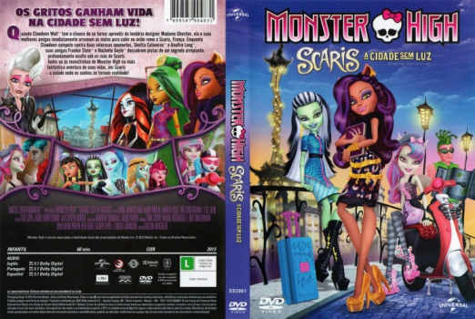

Outro Título:Monster High: Scaris City of Frights
País:United States, 61 minutos
Idiomas falados:Espanhol, Inglês, Português
Gênero(s):Animação, Fantasia
Diretor(s):Andrew Duncan, Steve Ball
Escritor(es):Mike Montesano, Ted Zizik
Codec:MPEG-2 (DVD)
Número: 5823


Certificado:L
Sinopse:
Quando Clawdeen Wolf tem a chance de se tornar aprendiz da lendária designer Madame Ghostier, ela e suas melhores amigas imediatamente arrumam as malas para subir no avião rumo a Scaris, França. Enquanto Clawdeen compete contra duas valorosas oponentes, Skelita Calaveras e Jinafire Long, suas amigas Frankie Stein e Rochelle Goyle descobrem pistas de um segredo arrepiante, profundamente oculto sob as ruas de Scaris. Junte-se as monstrinhas de Monster High na mais fantástica aventura de suas vidas, em Scaris a cidade onde os sonhos se tornam realidade!
Elenco:


Tipo de mídia: DVD5,
Legendas: Sem Legendas
Alugado: Não
Tela: Anamorphic Widescreen